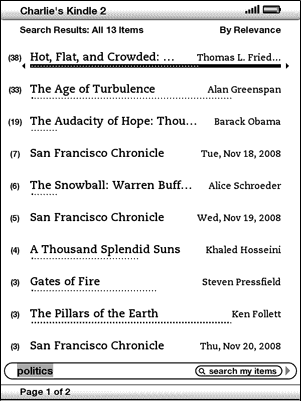
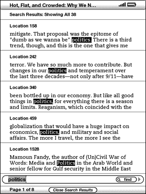
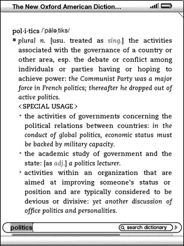
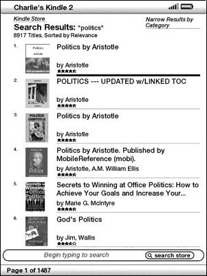

Kindle allows you to take advantage of powerful search capabilities. You can search locally on Kindle or remotely at the Kindle Store, Wikipedia, or the Web.
This section describes the types of searches that you can perform using Kindle and how to use search.
Kindle supports several types of search as summarized below.
You can limit a search to only what you are currently reading. You enter your search term or phrase and Kindle searches in the body of the text.
You can alternatively search all the reading material that you have stored on Kindle, including books, newspapers, magazines, and other items. You enter your search term or phrase and Kindle searches in the body of the text, in the metadata (for example, the title or author), and in your "My Clippings" file. Additionally, Kindle also keeps and searches the metadata for the content you have stored on Amazon.
Kindle can perform remote searches in several different locations using Whispernet. Each of these remote location searches are described in the final section of this chapter. See Searching the Kindle Store, Searching the Web, or Searching Wikipedia.
You can limit a search to the dictionary. Kindle searches your default dictionary for definitions of the word you have entered.
To perform a search, follow these steps:
When you are searching from Home, the screen will display a full Search page.

When searching all your content, Kindle looks in the reading materials you have on your Kindle and the metadata (like title and author) of the materials you have in Archived Items. This includes purchased items, personal documents, local reference materials, and annotations that you have created.
The example below shows a typical Search Results page.

The screen shows the titles of the items that contain your search term and indicates how many times the term occurs. The list is ordered by the number of occurrences of the search term in each item.
Use the Next Page and Previous Page buttons if there are more results than fit on the current page.
To see the results for one of the items listed:

To go to a specific location in the content where the search term occurs, use the 5-way to underline the location and press the 5-way to select.
When you want to look up the meaning of a word, you can limit a search to the dictionary. Kindle searches your default dictionary for definitions of the word you enter.
To find a definition, follow these steps:

You will see a complete definition of the word.
To search remotely, you must have Whispernet switched on. You can select any of the remote searches described in this section.
If Whispernet is not already on, press the Menu button. "Turn Wireless On" should automatically be underlined, so press the 5-way controller to select and turn on Whispernet.
To search Wikipedia, enter your term and move the 5-way to select "wikipedia." This opens Basic Web and displays the Wikipedia entry for the term if it exists.
To search the Web, enter your term and move the 5-way to select "google." This opens Basic Web and submits your search term to Google.
To search the Kindle Store, enter your term and move the 5-way to select "store." Your Kindle connects to the Kindle Store and displays the search results page for the store sorted by relevance, as shown in the example below. You can page through the results just like you would content on your Kindle.

Tip: You can also narrow a search in the Kindle Store to an author's name by typing "@author" followed by the author's name. For example, to search the Kindle Store for books by Agatha Christie, enter "@author Agatha Christie" in the Search line. This will narrow your Kindle Store search to find only books written by Agatha Christie.